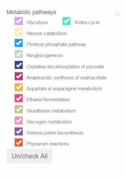

Visual options
Layout
The visual interface of this web application is seperated in two sections. On the left side there is the visualization window and on the right side a menu which allow the user to personalized his visualization. The window will take most of the screen in order to make the visualization better for the user.
The button "Layout options" has been implemented for the user to modify the visualization as he wish. By clicking on this button, a modal window will open which allow the user to choose on which metabolic pathway he wants to focus. He can also to choose to dcolor the verify metabolites of Physarum.

A "check/uncheck all" function has also been implemented which allow the user to select all the metabolic pathways that were implemented in this tool. This function is user-friendly.